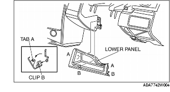

1. Pull the lower panel outward while rotating it, then disengage tabs A from the dashboard.

2. Pull the lower panel 20° downward, then disengage clips B from the dashboard.
3. Install in the reverse order of removal.